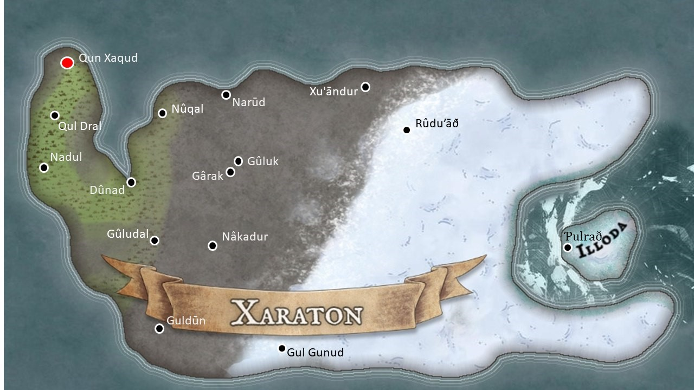
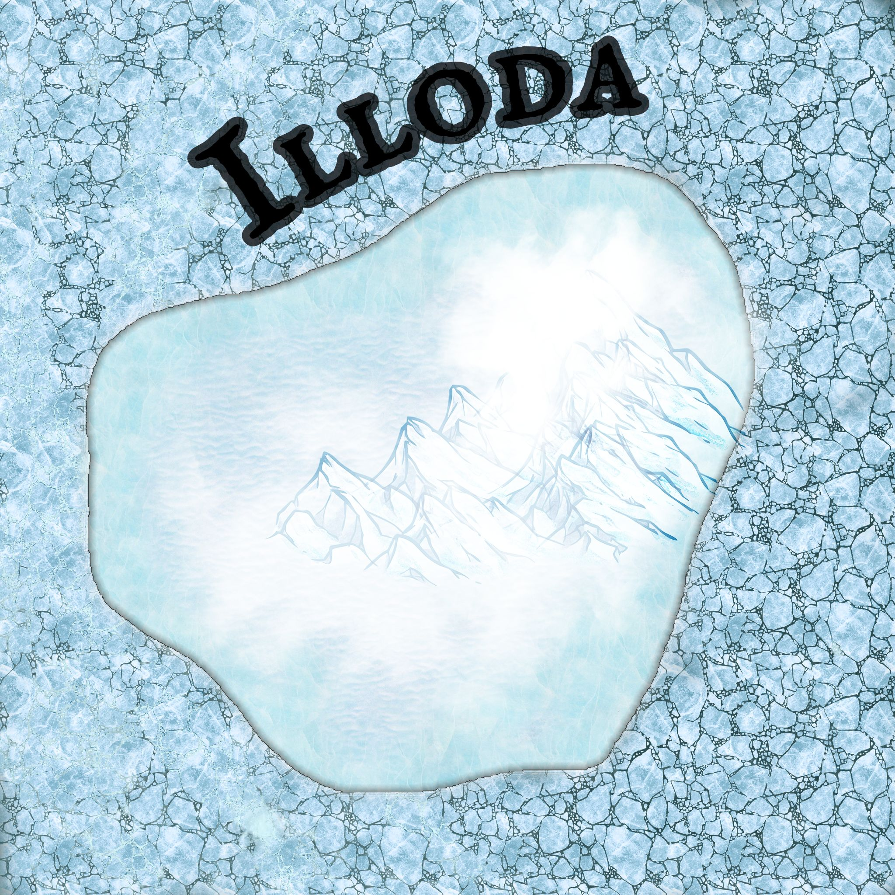

Xaraton
Xaraton ist einer der vier großen Kontinente im Südosten Suruthuas. Der eisige Osten des Kontinents ist Heimat der Drasken, während im steinigen Westen vor allem Guqual zu finden sind. 
Inhaltsverzeichnis
Name
Die Guqual nennen den Kontinent "Xaradūn". Andere Namen lauten "Xãoén", "Is-Kradun" und "Kartum".
Drah
Drah ist die Heimat der Drasken und wird auch die "Draskenlande" genannt.
Hochebene von Drah
- schneebedeckte Ebene (auf der Frostwein angebaut wird)
Städte
Drasna
Drasna liegt auf dem Kontinent Xaraton in den Draskenlanden. Sie befindet sich auf den Hochebenen von Drah. Hier wird der Frostwein/Drahwein hergestellt. Der Frostwein wird auf den Ebenen angepflanzt.+ 